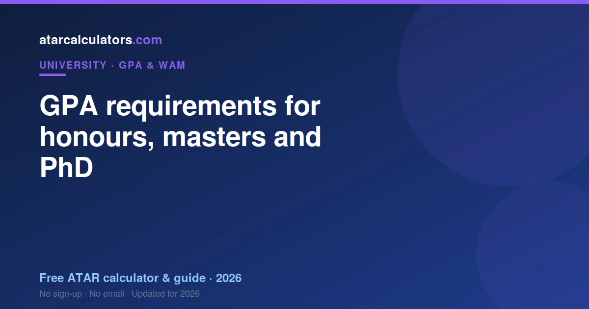

Honours entry usually needs a credit-to-distinction average, around a GPA of 5 or higher. First Class Honours, awarded on your honours result, typically corresponds to a WAM near 80, about a GPA of 6 or higher. Masters coursework often asks for a pass-to-credit average, with selective courses expecting more, and a PhD usually requires honours or a masters with a research component. Requirements vary by program, so always check.
Key takeaways
- Honours entry usually needs a credit-to-distinction average (GPA 5+).
- First Class Honours typically means a WAM near 80 (about GPA 6+).
- Masters coursework often asks for a pass-to-credit average.
- Selective masters courses expect a distinction average.
- A PhD usually needs honours or a masters with research.
- Postgraduate courses may use GPA or WAM, depending on the institution.
- Requirements vary by program — always check.

GPA for honours entry
Entry into an honours year usually requires a credit-to-distinction average in your undergraduate degree, often around a GPA of 5 or higher. More selective honours programs, and those in high-demand fields, can ask for more.
Some programs weight your marks in the relevant discipline more heavily than your overall GPA, so strong results in your major matter. If honours is your goal, aim for at least a solid credit average, and check the specific program’s threshold.
Honours is often the gateway to research and to a PhD, so meeting the entry requirement matters beyond the year itself. Plan for it across your degree, not just in your final year.
What First Class Honours means
First Class Honours is the highest honours result, awarded on your performance during the honours year itself, not on your entry GPA. It typically corresponds to a very high standard, often a WAM near 80, which is about a GPA of 6 or higher.
It carries real weight: it is often required for a competitive PhD place and for research scholarships. So while your entry GPA gets you into honours, it is your honours result that determines the class you graduate with.
The honours classes
Honours results are usually divided into classes: First Class, Second Class (often split into two divisions), and sometimes Third Class. Each corresponds to a band of performance in the honours year.
The higher the class, the more doors it opens for research and scholarships. First Class and the upper Second Class division are the results that keep competitive research pathways open, so aim as high as you can in the honours year.
GPA for a masters
Masters by coursework usually asks for a minimum of a pass-to-credit average in a relevant bachelor degree. This is a broad entry point, so many students qualify with a solid undergraduate record.
Some masters programs also consider relevant work experience alongside your GPA, which can help if your academic record is on the borderline. So a masters is often accessible even without a standout GPA.
Selective masters courses
More selective or high-demand masters courses expect more, often a distinction average or a strong record in the relevant field. These programs are competitive, so a higher GPA meaningfully improves your chances.
So the GPA you need for a masters spans a wide range, from a pass average for open-entry courses to a distinction average for selective ones. Check the specific course, since the bar varies a great deal.
GPA for a PhD
A PhD usually requires either honours, ideally First Class or upper Second Class, or a masters with a substantial research component. The emphasis is on demonstrated research ability, not just coursework marks.
So the path to a PhD runs through a strong honours result or a research masters, rather than a raw GPA threshold. A supervisor and a research proposal also matter, alongside your academic record.
Do postgraduate courses use GPA or WAM?
It depends on the institution. Some universities express their entry requirements as a GPA, others as a WAM, and some accept either. Because the two measure performance differently, it is worth knowing both your numbers.
If a requirement is stated as a WAM, use your WAM; if as a GPA, use your GPA. See WAM vs GPA for how they relate, and calculate both so you are ready whichever a program asks for.
If you are just below the requirement
If your GPA sits just below a program’s requirement, you are not necessarily out. Some programs consider your marks in the most relevant subjects, recent improvement, or relevant experience, alongside your overall average.
So it is worth contacting the program directly and asking how they assess borderline applicants. A strong upward trend, or strong results in the key discipline, can sometimes make the difference.
Planning ahead
The best time to plan for postgraduate entry is early in your degree, when you still have units ahead of you to build your average. Know the requirement for your goal, and track your GPA and WAM towards it.
Prioritising strong results in your major, and in high-credit units, builds the record that honours and postgraduate programs look for. See how to improve your GPA.
Check your GPA and WAM
To see where you stand against these requirements, use our GPA calculator and calculate your WAM too, since programs may ask for either.
Knowing both numbers, and the threshold you need, lets you plan your remaining units to reach your goal.
Why honours needs a strong GPA
Honours places are limited and often supervised individually, so programs select students likely to succeed at research. A credit-to-distinction average signals that you can handle advanced, independent work, which is why it is the usual bar.
Competitive programs raise the bar further because demand exceeds places. So the GPA requirement is not arbitrary; it reflects both the demands of research and the competition for limited supervision.
The research component
For research pathways, honours and research masters, your capacity for independent research matters as much as your GPA. A strong result in a research project or thesis unit can carry particular weight, since it shows the skills the degree demands.
So if you are aiming for research, prioritise the units that demonstrate research ability, not just your overall average. A strong project result, alongside a solid GPA, is exactly what research programs look for.
Alternative pathways to postgraduate study
If your GPA falls short of a program’s requirement, alternative pathways can still lead there. A graduate certificate or diploma, completed well, can serve as a stepping stone into a masters, letting you prove yourself at postgraduate level.
Relevant work experience, and strong results in a shorter qualifying program, can also open doors that a raw undergraduate GPA would not. So a lower GPA narrows but rarely closes the postgraduate route.
When to apply
Timing matters for postgraduate entry. Many programs assess your GPA at the point of application, so a strong final year can lift you over a threshold if you apply after results are in. Others assess on your record to date.
So check when a program calculates your GPA, and whether applying later, with more strong units counted, would help. Sometimes a single well-timed semester makes the difference at a cut-off.
International postgraduate entry
If you studied outside Australia, or are applying to an Australian postgraduate program from overseas, your grades will be mapped to the Australian system. Universities publish country-specific equivalents for their entry requirements.
So an international applicant’s GPA is assessed against those equivalents, not a single global scale. Check the university’s stated equivalent for your country, and provide the documents it requires.
A quick checklist
Before applying, run a quick checklist. Confirm whether the program states its requirement as a GPA or a WAM, calculate both of your numbers, check when the program assesses your average, and note any weighting of your marks in the relevant discipline.
Then compare your figure to the requirement with a buffer in mind, and look into alternative pathways if you fall short. A few minutes of checking saves you from applying blind or ruling yourself out too early.
When in doubt, ask the program
Requirements are rarely as rigid as they first appear. If you are close to a threshold, or unsure how your record will be assessed, contact the program directly and ask. Admissions staff can often clarify how they treat borderline cases, discipline-specific marks, or relevant experience.
A short, polite enquiry can save you from ruling yourself out unnecessarily, or from applying blind. Programs would rather answer a clear question than reject a strong candidate who simply misread the requirement.
Common questions
What GPA do I need for honours in Australia?
Honours entry usually requires a credit-to-distinction average, often around a GPA of 5 or higher. Selective programs ask for more, and some weight your marks in the relevant discipline. Check the specific program.
What GPA is required for a masters?
Masters by coursework usually asks for a minimum of a pass-to-credit average in a relevant degree, while selective courses expect a distinction average. Some programs also consider relevant work experience.
What GPA do you need for a PhD?
A PhD usually requires honours, ideally First Class or upper Second Class, or a masters with a substantial research component. The emphasis is on demonstrated research ability rather than a raw GPA threshold.
Do postgraduate courses use GPA or WAM?
It depends on the institution. Some state requirements as a GPA, others as a WAM, and some accept either. Because they measure performance differently, it is worth knowing both your numbers.
What is First Class Honours?
First Class Honours is the highest honours result, awarded on your performance in the honours year. It typically corresponds to a WAM near 80, about a GPA of 6 or higher, and is often required for a competitive PhD.